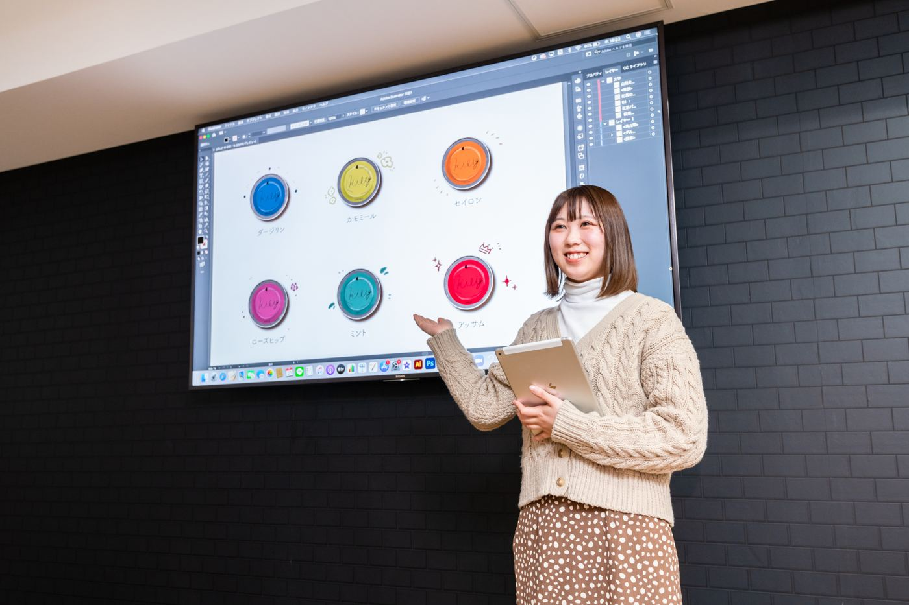
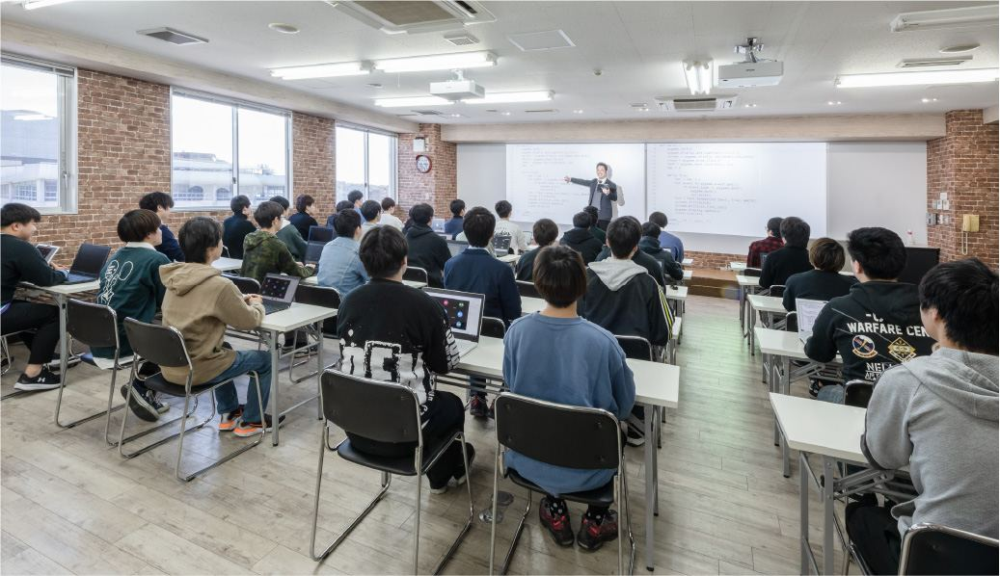

カリキュラム
情報・デザイン・電気通信をかけ合わせて学び、社会の新しいニーズにすぐ対応できる力をつけます。
トップ ／ 学びのしくみ
CIDの授業は、3限目からが「科目選択制」が中心です。将来の目標に合わせて好きな科目を選べるので、同じ学科でも一人ひとり時間割が違います。必要な単位数を満たしていれば、空いた時間をインターンシップなど「社会人経験を積む時間」に使うこともできます。

点線のマスを押して科目を選びます。「空ける」を選ぶと、その時間をインターンシップやアルバイトに使えます。1・2限は情報システム学科1年次の例です。
マスを選んでください
科目名は今のサイトに載っている選択推奨科目から選んでいます。実際に選べる科目と、卒業に必要な単位数は学科ごとに違います。
学びを深める、広げる、社会に出て試す。3つの時間の使い方を、自分で決められます。
今のサイトの「CIDの特長」を、短い言葉にまとめ直しました。
情報・デザイン・電気通信をかけ合わせて学び、社会の新しいニーズにすぐ対応できる力をつけます。
必修科目のほかに、将来の目標に合わせて好きな科目を自由に選べます。同じ学科でも、得意分野は人それぞれです。

空いた時間をインターンシップなどに使い、在学中から社会人としての経験を積めます。
同じテーマに関心のある学生が集まり、考え、教え合いながら学ぶ授業です。

現場で活躍してきたプロが、業界が求める本物の技術と、社会で信頼される人間力の両方を教えます。

就職指導センターと担任が組んで、1年次の秋から一人ひとりの就職活動を支えます。